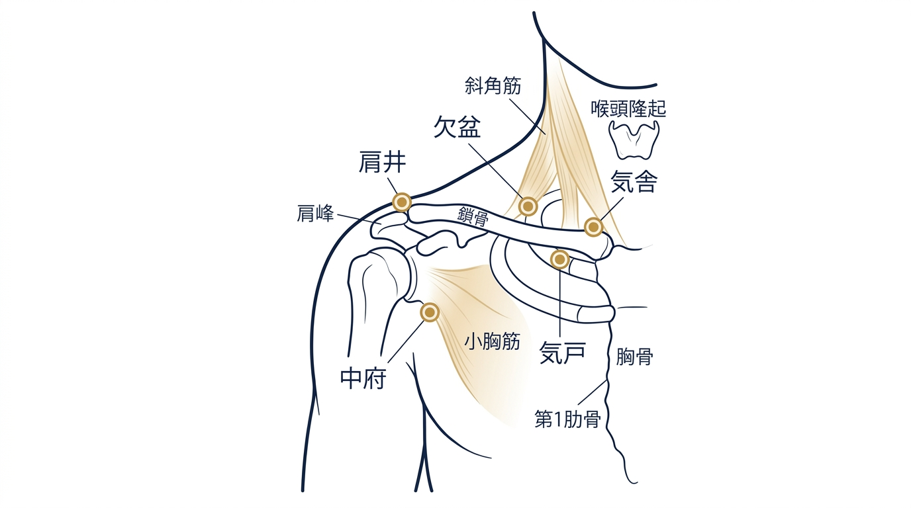

胸郭出口症候群の鍼灸
首・鎖骨・胸まわりでの神経圧迫による腕や手のしびれを、斜角筋・小胸筋などの深層筋鍼灸で解放する解説。
4つのタイプ分類と見分け方
| タイプ | 圧迫される場所 | 特徴的な誘発動作 | 鍼灸の適応 |
|---|---|---|---|
| 斜角筋症候群（最多） | 首の前・中斜角筋の間 | 上を向くと腕がしびれる | ◎ 非常に有効（当院来院最多） |
| 肋鎖症候群 | 肋骨と鎖骨の間 | 胸を張ると腕に症状が出る | ◎ 非常に有効 |
| 小胸筋症候群 | 胸の奥の小胸筋の下 | バンザイで手がしびれる／増悪 | ◎ 非常に有効 |
| 頸肋症候群 | 頸椎横突起の骨（頸肋） | 首を振るとビリビリ響く | ✕ 骨性圧迫のため手術適応（医療機関優先） |
胸郭出口症候群に用いられる代表的なツボ

| ツボ名（経穴） | 位置の目安 | 主な狙い・役割 | セルフケアの注意点 |
|---|---|---|---|
| 気舎（きしゃ） | 鎖骨内端の上際のくぼみ | 胸鎖乳突筋・前斜角筋付着部の緊張緩和 | 必ず片側ずつ（両側同時押し禁止）。弱く3〜5秒 |
| 欠盆（けつぼん） | 鎖骨中央のすぐ上のくぼみ（鎖骨上窩） | 前・中斜角筋間の絞扼緩和、上肢放散痛の軽減 | 神経・動脈・肺尖近接。腕に響く場合は即中止 |
| 中府（ちゅうふ） | 鎖骨外端下のくぼみから指1本分下 | 小胸筋・烏口突起下の緊張緩和、巻き肩改善 | 吐く息に合わせて優しく圧迫。強く揉み込まない |
| 気戸（きこ） | 乳頭線上、鎖骨のすぐ下縁 | 肋鎖間隙の緊張緩和、胸郭の開き改善 | 鎖骨下動静脈が近いため強圧NG。軽く10秒×3回 |
| 頸臂（けいび・奇穴） | 鎖骨内側1/3と外側2/3の境界から上約1寸 | 前斜角筋深部・腕神経叢近傍の筋緊張緩和 | 重要神経・血管に極めて近接するため専門施術専用 |
| 肩井（けんせい） | 第7頸椎と肩先を結んだ線の中点 | 僧帽筋上部の過緊張緩和、なで肩・引き下げ負担軽減 | 強い揉みほぐしは防御収縮を招くため温熱中心（妊娠中禁忌） |
査読論文が示す「斜角筋・小胸筋・TOS×鍼灸」の科学的エビデンスと安全性
| 年・研究デザイン | 対象・規模 | 主な結果と臨床的意義 | 限界・出典 |
|---|---|---|---|
| 2026年 メタ解析 | 前斜角筋症候群（TOS代表型）11 RCTs（計746名） | 総有効率RR=1.21（P<0.00001）、VAS疼痛MD=−1.04（P=0.0002）、3か月再発率16.7% vs 52.8%（RR=0.32, P=0.004）。 | 非盲検・中国単施設中心、GRADE低。J Pain Res (PMID: 42454012) |
| 2020年 単盲検RCT | 斜角筋トリガーポイント保有者 30名 | 1か月後の疼痛強度（NPRS）が圧迫リリース群より有意改善（p=0.01）、吸気肺活量も有意増加（p=0.006）。 | 小規模・単回介入・機械的頸部痛対象。Acupunct Med (PMID: 32228029) |
| 2026年 4群単盲検RCT | 慢性機械的頸部痛 68名（6か月追跡） | 尺骨・正中神経および前斜角筋の圧痛閾値が有意改善（p<0.05）、6か月後の全体疼痛もシャム比有意低下（p=0.017）。 | 運動併用・TOS単独ではない。J Man Manip Ther (PMID: 41319009) |
| 2021年 献体解剖研究 | 献体12体・24刺鍼（奇穴・頸臂） | 全24刺鍼が前斜角筋を穿刺し腕神経叢内側3〜7mmに到達。性差・体格差（深度差約8mm, p<0.05）への厳密な配慮が必要。 | 解剖学的安全性指標。Acupunct Med (PMID: 32735123) |
| 2026年 安全性検証 | 献体5体＋健常者10名（小胸筋刺鍼法比較） | 熟練者のフラット法は正確率100%。初心者のピンサー法で胸膜穿刺（気胸リスク）1例発生。熟練術者の精密技術が不可欠。 | 小規模パイロット安全性研究。J Funct Morphol Kinesiol (PMID: 41900528) |
注意点と、病院受診を最優先すべきサイン
悪化を防ぐセルフケアの鉄則
- 首・肩・腕のマッサージとストレッチは原則NG：揉む・伸ばす刺激で筋肉が防御収縮を起こし、再発を繰り返す悪循環になりやすいため中止を推奨しています（公式解説）。
- 腕に響くセルフ押しは即中止：鎖骨上を軽く押して腕へ電撃痛が走る段階は自己ケアを避け、専門家へ相談してください。
⚠ 整形外科・血管外科の受診を最優先すべきサイン
腕や手の急な腫れ・青紫色への変色・強い冷感（血管性TOS・鎖骨下静脈血栓症の疑い）、手の筋肉の著しいやせ細り（筋萎縮）や握力低下、レントゲンで骨性の「頸肋」が指摘されている場合は、医療機関での精密検査・治療を最優先してください。
参考文献・出典
- 銀座そうぜん鍼灸院「胸郭出口症候群の鍼灸【原因・種類・ツボ・対処法】」
- Wei et al., J Pain Res (2026) — PubMed PMID: 42454012
- Arias-Buría et al., Acupunct Med (2020) — PubMed PMID: 32228029
- Piña-Pozo et al., J Man Manip Ther (2026) — PubMed PMID: 41319009
- Chia et al., Acupunct Med (2021) — PubMed PMID: 32735123
- Sánchez-Sánchez et al., J Funct Morphol Kinesiol (2026) — PubMed PMID: 41900528
よくある質問（FAQ）
Q. 何回くらいで変化を実感できますか？
複数パターンが絡み合う場合もありますが、平均5回前後の施術で変化が出ることが多く、当院では210例中200例で改善した実績があります。
Q. 肩や腕のストレッチ・マッサージは効果的ですか？
揉んだり伸ばしたりすると筋肉が防御反応でさらに硬くなり悪循環を招くため、当院では控えていただいています。
Q. 病院で頚椎ヘルニアと言われましたが関係ありますか？
ヘルニアと診断されていても、実際は胸郭出口での筋肉による神経圧迫が原因で鍼灸により改善するケースが少なくありません。
あわせて読まれる関連疾患（特に対応することが多い症状）
頭の中で「キーン」「ザー」と音が鳴り続ける状態を、脳の過覚醒（自律神経）と首肩の深層筋から整える施術解説。
感染後に長引く倦怠感・ブレインフォグ・嗅覚障害・自律神経症状に対し、全身の自己回復力を引き出す施術解説。
肘の内側での尺骨神経圧迫による小指・薬指のしびれに対し、前腕の深層筋を緩め神経再生を促す施術解説。
30歳以上の女性の約4人に1人にみられる子宮筋腫に対し、骨盤内の血流と自律神経バランスを整える施術解説。
吸入薬で止まらない長引く空咳に対し、自律神経・気管支神経の興奮と逆流性食道炎の視点から整える施術解説。
交感神経と副交感神経のバランス崩れによる不眠・倦怠感・めまい・胃腸不調を、体と神経の両面から整える解説。